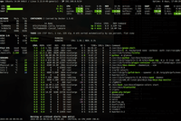

Glances
Dieser Artikel wurde für die folgenden Ubuntu-Versionen getestet:
Ubuntu 16.04 Xenial Xerus
Ubuntu 14.04 Trusty Tahr
Zum Verständnis dieses Artikels sind folgende Seiten hilfreich:
 Glances
Glances  ist ein System-Monitor für die Kommandozeile. Gegenüber dem Klassikern top und htop bietet das Programm neben Prozess-Informationen ergänzende Echtzeit-Statistiken zu Dateisystem, Netzwerk, Hardware-Komponenten etc. Es besitzt eine ncurses-Oberfläche und kann einfach mit der Tastatur bedient werden. Erstellt wurde es mit Python und der Bibliothek psutil .
ist ein System-Monitor für die Kommandozeile. Gegenüber dem Klassikern top und htop bietet das Programm neben Prozess-Informationen ergänzende Echtzeit-Statistiken zu Dateisystem, Netzwerk, Hardware-Komponenten etc. Es besitzt eine ncurses-Oberfläche und kann einfach mit der Tastatur bedient werden. Erstellt wurde es mit Python und der Bibliothek psutil .
Installation¶
Das Programm ist ab Ubuntu 12.10 Bestandteil der offiziellen Paketquellen. Folgendes Paket muss installiert werden [1]:
glances (universe)
 mit apturl
mit apturl
Paketliste zum Kopieren:
sudo apt-get install glances
sudo aptitude install glances
Verwendung¶
 Kurze Syntaxbeschreibung für die Verwendung im Terminal [2]:
glances [OPTIONEN]
Die Angabe von Parametern ist optional. Einstellungen können auch in der Datei /etc/glances/glances.conf (systemweit; Root-Rechten erforderlich [3]) oder ~/.config/glances/glances.conf (pro Benutzer) vorgenommen werden. Beendet wird das Programm mit der Taste Q .
Entfernte Rechner¶
Hinweis:
Diese Funktion steht erst ab Version 2.0 oder neuer zur Verfügung. Möchte man eine verschlüsselte Verbindung (HTTPS) verwenden, wird ein Webserver als Reverse-Proxy benötigt.
Möchte man einen entfernten Rechner überwachen, kann man neben einer SSH-Verbindung oder einem Server-/Client-Modus auch den integrierten Webserver einsetzen. Dazu ruft man glances auf dem zu überwachenden Rechner bzw. Server mit der Option -w auf:
glances -w
Glances web server started on http://0.0.0.0:61208/
Anschließend ruft man folgende URL im Browser der Wahl auf:
http://SERVER-NAME_ODER_IP-ADRESSE:61208
Beendet wird der integrierte Webserver mit der Tastenkombination Strg + C .
Optionen¶
Die verfügbaren Optionen unterscheiden sich je nach Programmversion. Weitere Informationen sind der Manpage und der ausführlichen Programmdokumentation zu entnehmen.
| Optionen (Auswahl) | |
| Parameter | Funktion |
-V | Version anzeigen |
-h, --help | Kurzhilfe anzeigen |
-t N | Aktualisierungsrate in N Sekunden (Standard: 3) |
-C DATEI | Andere Konfigurationsdatei verwenden |
-p PORT | Standard: 61208 |
-w | Integrierten Webserver starten |
-s | SERVER-Modus starten |
--password ***** | Kennwort für SERVER-Modus |
--browser | Nach SERVER suchen (Client-Modus) |
-c SERVER | Mit SERVER verbinden (Client-Modus) |
Tastenbelegung¶
Auch hier gibt es je nach Version kleine Unterschiede. Ausschlaggebend ist die integrierte Hilfe, die über die Taste H angezeigt werden kann und die Manpage.
| Taste(n) | Funktion |
| C | Prozesse nach % CPU-Nutzung sortieren |
| M | Prozesse nach % Speicher-Nutzung sortieren |
| P | Prozesse nach Name sortieren |
| I | Prozesse nach I/O-Rate sortieren |
| D | Disk I/O Statistik anzeigen/verbergen |
| F | Dateisystem-Statistik anzeigen/verbergen |
| N | Netzwerk-Statistik anzeigen/verbergen |
| S | Hardware-Sensoren anzeigen/verbergen |
| T | Netzwerk-I/O kombiniert anzeigen |
| U | kumulativen Netzwerk-I/O anzeigen |
| W | Protokolleinträge der Stufe WARNING löschen |
| X | Protokolleinträge der Stufen WARNING und CRITICAL löschen |
| Y | Festplattentemperatur anzeigen/verbergen |
| 1 | Globale CPU-Statistik oder pro Kern |
| L | Protokolleinträge anzeigen/verbergen |
| B | Bit/s or Byte/s für Netzwerk-I/O |
| Q , Esc , Strg + C | Beenden |
Problembehebung¶
Protokolldatei¶
Bei Unregelmäßigkeiten sollte man einen Blick in die Datei /tmp/glances.log werfen.
Links¶
Glances 2.0 zeigt Systeminformationen nun auch per Web an
 - Blogbeitrag, 06/2014
- Blogbeitrag, 06/2014Shell/Anwendungen
 Programmübersicht
Programmübersicht
- Erstellt mit Inyoka
-
 2004 – 2017 ubuntuusers.de • Einige Rechte vorbehalten
2004 – 2017 ubuntuusers.de • Einige Rechte vorbehalten
Lizenz • Kontakt • Datenschutz • Impressum • Serverstatus -
Serverhousing gespendet von